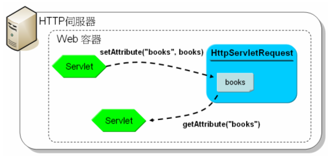

|
|
在Web應用程式中，經常需要多個Servlet來完成請求，像是將另一個Servlet的回應包括進來，或將請求轉發給別的Servlet處理。例如，在 關於 MVC/Model 2 曾經看過範例中出現這段程式碼： req.getRequestDispatcher("hello.jsp").forward(req, resp);
實際上透過HttpServletRequest的getRequestDispatcher()取得的是一個實作了RequestDispatcher介面的物件，呼叫HttpServletRequest的getRequestDispatcher()時需要傳入一個相對於目前請求URL的路徑資訊。 （你還有另外兩個方式，可以取得RequestDispatcher的方式還有兩個，即透過ServletContext的getRequestDispatcher()或getNamedDispatcher()，之後談到ServletContext時會再介紹。） RequestDispatcher上有個include()方法，可以讓你將另一個Servlet回應包括至目前的回應之中。例如： package cc.openhome; other.view實際上會循URL模式取得對應的Servlet。呼叫include()時，必須分別傳入實作HttpServletRequest、HttpServletResponse介面的物件，這可以是service()方法上傳入的物件，或者是自定義的物件或包裹器（Wrapper）。如果被include()的Servlet是這麼撰寫的： import java.io.*; 則網頁上見到的順序是： Some do one...
Other do one... Some do two... 在取得RequestDispatcher時，也可以包括查詢字串，這會在被包括（Include）或轉發（Forward，透過forward()方法）的Servlet中取得。例如： req.getRequestDispatcher("other.view?data=123456").include(req, resp);
則被包括的Servlet，可以使用req.getParameter("data")來取得請求參數值。在調派請求的過程中，如果有必須共用的物件，可以設定給請求物件成為屬性，稱之為請求範圍屬性（Request Scope Attribute）。HttpServletRequest上與請求範圍屬性有關的幾個方法是：
例如有個Servlet會根據某些條件查詢資料： List<Book> books = bookDAO.query("some books"); request.setAttribute("books", books); request.getRequestDispatcher("result.view") .include(request,response); 假設result.view這個URL是個負責回應的Servlet實例，則它可以利用ServletRequest物件的getAttribute()取得查詢結果： List<Book> books = (List<Book>) request.getAttribute("books");  由於請求物件僅在此次請求週期內有效，在請求/回應之後，請求物件會被銷毀回收資源，設定在請求物件中的屬性自然也就消失了，所以透過setAttribute()所設定的屬性才稱之為請求範圍屬性。 在設定請求範圍屬性時，需注意屬性名稱由java.或javax.開頭的名稱通常保留給規格書中某些特定意義之屬性。例如：
以上的屬性名稱在被包括的Servlet中，分別表示上一個Servlet的Request URI、Context path、Servlet path、Path info與取得RequestDispatcher時所給定的請求參數，如果被包括的Servlet還有包括其它的Servlet，則這些屬性名稱的對應值也會被代換。 在使用include()時，被包括的Servlet中可以使用getSession()方法取得HttpSession物件（之後會介紹，預設會在回應中加個一個Cookie請求標頭），除了這個之外，在被包括的Servlet中任何對請求標頭的設定都會被忽略。 RequestDispatcher有個forward()方法，呼叫時同樣必須傳入請求與回應物件，這表示你要將請求處理轉發給別的Servlet，回應亦轉發給另一個Servlet，要呼叫forward()方法的話，目前的Servlet不能有任何回應確認（Commit），如果在目前的Servlet的有透過回應物件設定了一些回應但未確認（回應緩衝區未滿或未呼叫任何出清方法），則所有回應設定會被忽略，如果已經有回應確認且呼叫了forward()方法，則會丟出IllegalStateException。 在被轉發請求的Servlet中，亦可透過以下的請求範圍屬性名稱取得對應資訊：
|